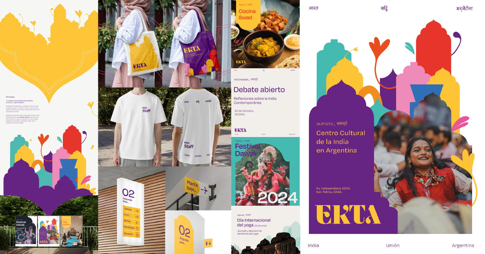
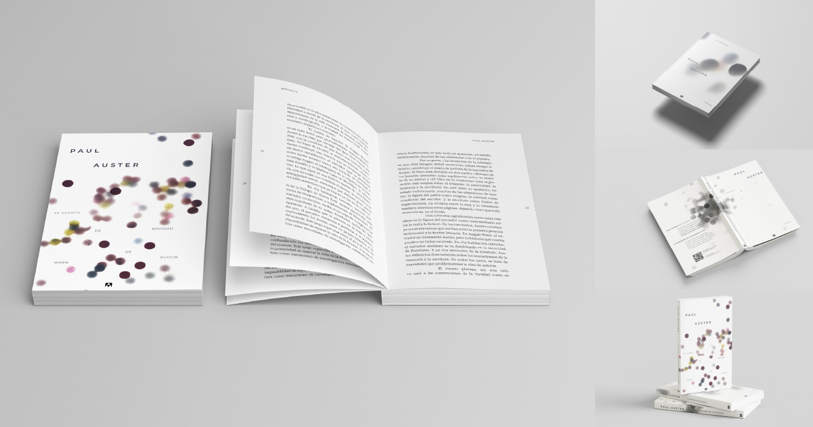

Miranda
Diseñadora y también un poco más
Estudio en la UNLa desde 2022, me encanta abordar el diseño desde un lado conceptual y poder incorporar la gráfica para contar historias. Descubrí y construí desde lo colectivo mi manera de ver el mundo y entender el diseño como herramienta para proponer soluciones. Me interesa explorar diferentes universos, creando grupos de trabajo colectivos donde se aporten herramientas y diferentes cosmovisiones. Mis proyectos reflejan mi curiosidad por entender cada proyecto y aportar una mirada innovadora.
Proyectos
Destacados

